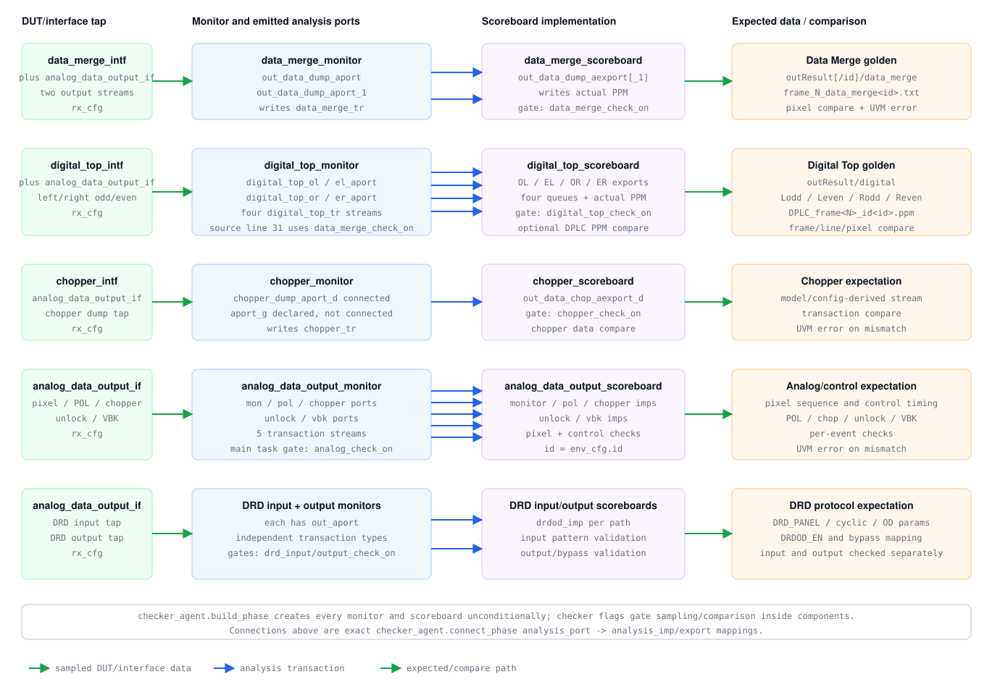
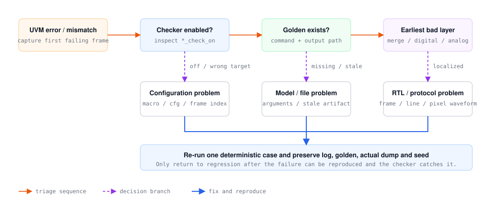

HV2M23 / DV_TCON_C
Checker 与失败定位
按 Data Merge、Digital Top、Chopper/Analog 和 DRDOD 独立路径说明实际 monitor/scoreboard。
Source baseline: E:\DV_TCON_C · audited 2026-07-27

组件创建方式：
checker_agent.build_phase 无条件创建 Data Merge、Digital Top、Chopper、Analog、DRD input 和 DRD output 的全部 monitor/scoreboard。各 *_check_on 在组件内部控制采样、文件读取或比较，不控制 factory create。源码审计发现：
digital_top_monitor.sv:31 在 transaction 非空判断中使用 env_cfg.data_merge_check_on，而 scoreboard 比较使用 digital_top_check_on。关闭 Data Merge、只打开 Digital Top 时应确认该条件是否会影响预期采样。analysis_port 精确连接
| Monitor port | Scoreboard imp/export | 数据流数量 |
|---|---|---|
out_data_dump_aport / _1 | out_data_dump_aexport / _1 | Data Merge 2 路 |
digital_top_ol/el/or/er_aport | out_data_ol/el/or/er_aexport | Digital Top 4 路 |
chopper_dump_aport_d | out_data_chop_aexport_d | Chopper 1 路；aport_g 已声明但未在 checker_agent 连接 |
mon2scb、pol、chopper、unlock、vbk | monitor_imp、pol_imp、chopper_imp、unlock_imp、vbk_imp | Analog/control 5 路 |
DRD input/output 各自的 out_aport | 各自 scoreboard 的 drdod_imp | DRD 2 条独立路径 |
检查路径
| 开关 | 采样/比较 | 关键事实 |
|---|---|---|
data_merge_check_on | Data Merge monitor / scoreboard | 两路 analysis port；输出 PPM，并读取 outResult/data_merge 文本。 |
digital_top_check_on | Digital Top monitor / scoreboard | 分别比较 OL、OR、EL、ER，错误含 frame/line/pixel 数据。 |
chopper_check_on | Chopper monitor / scoreboard | 检查 chopper dump 数据。 |
analog_check_on | Analog output monitor / scoreboard | 同时连接 pixel、POL、chopper、unlock、VBK 五类 analysis path。 |
drd_input_check_on | DRD input scoreboard | 根据 DRD_PANEL gate pattern、OD_k 和 cyclic mode 生成期望。 |
drd_output_check_on | DRD output scoreboard | 检查 DRDOD_EN，并在 bypass 时比较 input/output。 |
失败定位顺序
- 先确认 testcase 中对应
*_check_on是否真的打开。 - 检查 golden 文件是否存在，特别是
outResult、DPLC 和 DRDOD 输出。 - 按最前级失败定位：Data Merge -> Digital Top -> Chopper/Analog；DRDOD 使用独立 input/output 路径。
- 用日志中的 frame/line/pixel 定位波形，不要只看最终 PPM。

错误类型与优先证据
| 现象 | 优先检查 | 保留产物 |
|---|---|---|
| 第一帧立即大量 mismatch | 尺寸、通道排列、CHSEL/POLC/DOTC/SHL 与 golden 参数 | 命令行、cfg_frame0、actual/golden 首行 |
| 某一帧开始失败 | frame index、cfg 复用、寄存器切换时刻 | 前后两帧 setting packet 与寄存器 dump |
| 只有 OL/OR/EL/ER 一路失败 | odd/even、left/right 拆分和文件选择 | 该路 monitor dump 与对应 golden |
| DRD bypass 失败 | DRDOD_EN、panel gate、input/output 对齐 | DRD input/output transaction |
| 图像 checker 全关但 case fail | testcase 内 I2C、层次信号或 UVM error 检查 | 定向 task 日志与 force/release 时刻 |